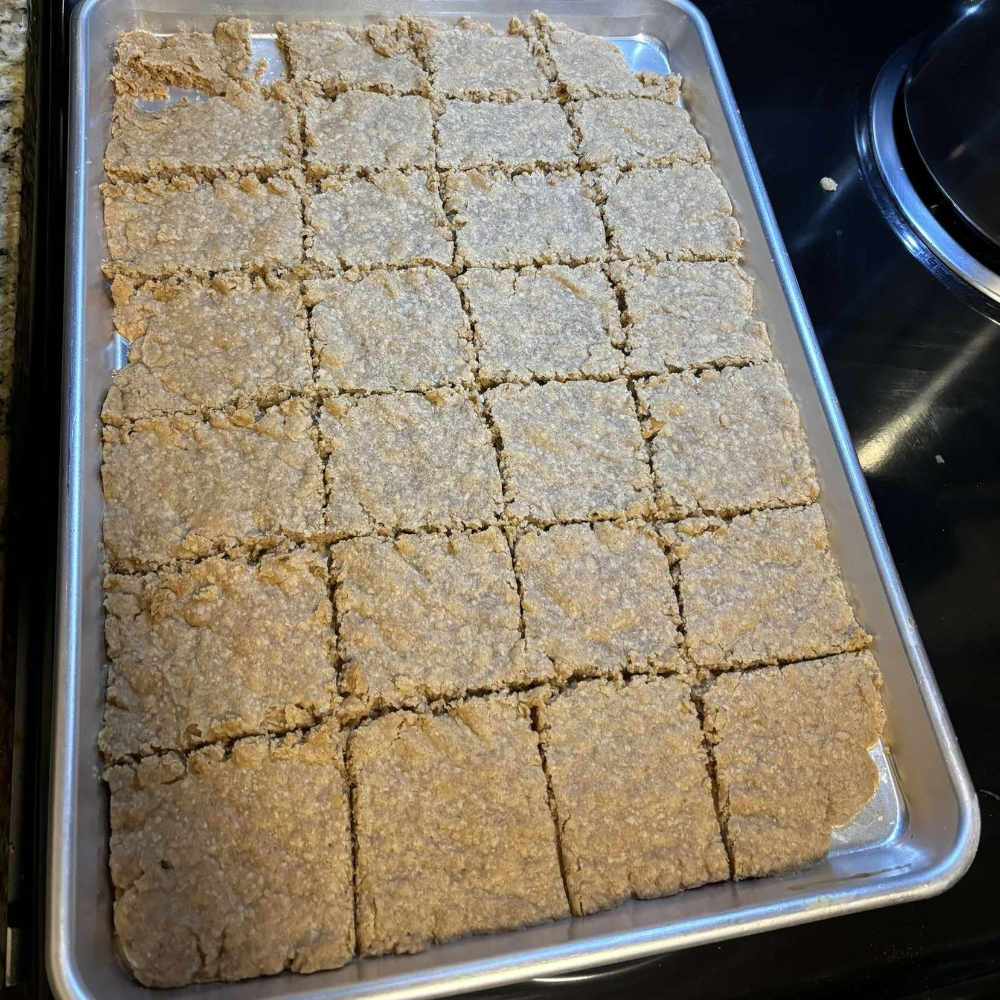

The Speculaas
Ingredients:
- 3 Cups Flour
- 1 1/2 Cups Buttermilk
- 1 Cup Brown Sugar
- 1 Teaspoon Baking Powder
- 3 Teaspoons Silvo Speculaas Spice
- or 3 Teaspoons of your own spice combination using:
- 2-5 Tablespoons Cinnamon (depending on your preference)
- 1 Teaspoon Ground Nutmeg
- 1 Teaspoon Ground Cloves
- 1/2 Teaspoon Ground Aniseed
- 1/2 Teaspoon Ground White Pepper
- 1/2 Teaspoon Ground Coriander Seed
- 1/2 Teaspoon Ground Ginger
- 1/2 Teaspoon Salt
If you do not have the Silvo Speculaas Spice, take a bowl and place all of the alternative spices into it. There are a lot of spices, and everybody has different preferences, so adjust each time until you find your perfect combination. Mix it well, make sure that it is not clumpy or anything. Use a mortar and pestle if necessary for breaking down the spices so that they are all consistent. Next, start with the baking.
First, pre-heat the oven to 350°F. Mix the flour, sugar, baking powder, spices, and salt into a bowl. Then, mix in the butter, slowly, adding a little bit of butter to the mixtue every couple of minutes or so until all of the butter is used and it is combined into one ball with everything else.
Spread out dough on a pan and let rest for an hour, covered with a towel. Bake in the oven for 35 minutes or until golden brown. Cut into pieces and set the tray out to cool down. Once cool, eat and enjoy!